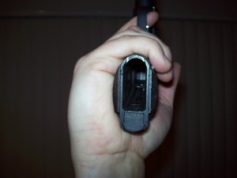
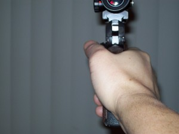

Brian Zins is clearly the greatest pistol shooter of all-time. His unprecedented ELEVEN national championship wins is a milestone that will never be broken. His thoughts are especially valuable because he doesn't always follow tradition on technique.
Let me start by stating that some of what you’re about to read may sound contradictory to a lot of articles that have been written and lessons that have been taught in the past. Some of this may say the same thing in the end, just a different route to get there. By no way am I suggesting they are incorrect. I am merely giving my approach to learning bulls-eye and what I do as a shooter.
Started out this segment as “Fundamentals” but, honestly if you know me there is only one that really, really counts when the shot breaks. Don’t get me wrong stance and grip and aiming are important. Keep in mind that you can have a perfect grip and hold perfect sight alignment all day long. It only counts when the gun goes bang and only one action causes the gun to go bang. Pulling the trigger. You can hold the gun upside down, squeeze the trigger with your pinky, and align the sights to the target in a mirror and shoot tens as long as you don’t jerk the trigger.
Please DO NOT try that at home.
Again this is what I was taught and this is what I do. It is a way, not THE way, that’s all. But I have had pretty good results with it. Also this is for a trigger with at least a little roll. My preference that’s all.
Where should the trigger make contact on the finger? The trigger should be centered in the first crease of the trigger finger. Remember this is an article on Bulls-eye shooting. If this were an article on free pistol or air pistol it would be different. So International shooters please don’t unleash the hounds on me.
Why you ask? We have always been taught to place the pad on the trigger. If you a trigger that weighs in between 2 and 4 lbs. That is enough weight to move the fleshy part of the pad of your finger. Try it! Get something that weighs at least 2 lbs that has a tip or point on it the size of a pen or a trigger would be ideal. Put your hand on a table or desk, palm up and slowly lower the weight onto the pad of the finger. It moves. A lot. Now lower the weight onto the first crease of the finger, right on the joint. Sure it moves, a whole lot less than the fatty, fleshy part of the pad of the finger. Now having conducted this little experiment think about the pulling the trigger with the pad of the finger. The first part of movement you feel is flash and fat moving out of the way. This is not part of the movement involved in trigger control.
Ever been shooting well and in slow fire you start to get “chicken finger?” The trigger starts moving and then it stops and feels like it weighs 30 lbs, or did it move at all? Maybe what you felt was the flesh moving out of the way cause you are shooting well and don’t want to screw up the match, so you are really in tune with what you are feeling in the trigger.
Now think if the trigger were placed at the crease or first joint of the trigger finger. When the trigger moves, what you are feeling is really the trigger moving.
Take a pen or a pencil and start tapping the fleshy part of the web between your trigger finger and the thumb. Keeping the same intensity move the tapping up the large knuckle on your trigger finger. Feel the difference? The flesh acts as a shock absorber to the tapping where the tendon in the joint is more of a conductor. I know what you’re thinking. Why do I want to feel that? Because it is that important to be able to feel every little movement of your trigger so you know that you are squeezing the trigger and not jerking the trigger.
I remember when I was in Boot Camp and they taught us about trigger control before we went to the rifle range. I now look back realize they were, well not wrong, but mistaken. Just in case I run into one of my old Drill Instructors and by some strange twist of fate he read this article. We were taught two different types of trigger control: Interrupted and Uninterrupted. I still believe that there are two types: Uninterrupted and Wrong.
If trigger control is ever interrupted in slow fire the shot needs to be aborted and the shot started over. If trigger control is interrupted in a sustained fire stage then we revert to our “key word” that triggers us to kick-start our shot process. Shot process and “key word” if not already covered will be covered later.
Often when the fundamentals are explained these two are explained as two different acts. Well truth be told, it’s really kind of hard to accomplish one without the other. They have a symbiotic relationship. In order to truly settle the movement in the dot or sights you need a smooth steady trigger squeeze. Trigger control is merely a reaction to what the eye sees.
What? One can hold perfect sight alignment / sight picture for a long time. Now apply pressure to the trigger, what happens? Something moves right? So if this happens in a slow fire shot what typically happens? We stop squeezing until everything settles down again and we start the trigger. It moves. We stop the trigger. It settles. We start the trigger. It moves and so on and so on and so on. So from this we can see how the finger already acts to what the eye sees. We do not have to train the eye to accomplish this it already does it. We need to make it work for us and get the finger to react at a more opportune time. BEFORE we have obtained perfect sight alignment / sight picture. Yes I just said to start squeezing the trigger before you have obtained a perfect sight alignment / sight picture. Your sight alignment should be pretty close to perfect since we have mastered a perfect grip and the sights are aligned, not just to each other but also to the our eye, as soon as we raise the gun. Or we will master that soon. So before the sights or dot have settled into the center of the target we should start our trigger squeeze taking advantage of the pressure that is being applied to the trigger to help stabilize the sight. Continue to squeeze the trigger uninterrupted using that pressure to help move toward and stay center and allow the shot to break.
Said nothing about a surprise break. Not a big believer in the surprise break. Just being honest. I know when my gun is going to shoot. I know what it feels like right up until it shoots. I really know my trigger. I have done lots of dry firing without looking at the sights just to know what it feels like.
It has been called steering the sights with the trigger, but I don’t like the connotation that carries. More of a sight alignment/sight picture through trigger control concept.
Not saying that this is the only grip to use. This is merely an option, it may work for you it may not, depending on your hand size and structure. It works for me and it has worked for many shooters that Andy and I have taught it to. It is not UNSAFE for those who have questioned it, trust me the gun will move less with this grip. If you do use a grip that aligns the sights and gun up your arm to your shoulder you are putting yourself at a huge disadvantage.
Here we go.
A proper grip is a grip that will NATURALLY align the guns sights to the eye of the shooter without having to tilt your head or move your wrists around in order to that. Also a proper grip, and most importantly, is a grip that allows the gun to return to the same position that is one in that allowed the sights to be aligned without having to search for the sights after each and every shot.
To many times I have seen, and I am sure most of you have also, may do it yourself. Someone shoots and you can see the front of the gun waving around as they try to get sight alignment back. This is not a problem with recoil management, grip strength or position. This is a grip issue.
If you line the gun up you arm and too your shoulder in order to align the sights one of 2 things must happen. Your head leaves a natural position in order to see the sights since they are lined up with your shoulder or you have turn your wrists until the sight are slignes to your eye and then the gun is no longer aligned up your arm. This was called “grip alignment.”
Yes back in the day they taught “grip alignment.” Well grip alignment as they described it is BS, just like Natural Point of Aim with a pistol is BS. But that’s a different conversation. Two handed shooters don’t even shoot with the gun aligned up their strong arm to their shoulder. Unless you have some deformity and you head is growing out of your shooting side shoulder why would you want the gun aligned up your arm to your shoulder?
This is for a 1911 slab style grip or a .22 with slabs. If you are using orthopedic grips you can’t do it with them.
My grip is simple, it’s not hard to get into and once you get it, it will feel better and recoil will be better managed and the sights will always come back to alignment. If you rotate the meaty portion of your hand below the little finger behind the back-strap of the gun, everytime you shoot, it will want to move off of it. It is just a squishy, fatty portion of your hand that cannot control the gun or offer any resistence to recoil whatsoever. The fatty portion of the hand there cannot be moved, it is just fat. Try to move it. The movement caused by making fist does not count because the rest of the hand causes that movement. The place the gun tends to move to is the valley formed between that meaty portion below the little finger and the meaty part of the thumb. So I ask why not start with the gun in the place it wants to be.
Even with a picture this hard to describe and even when done in person we still tend to have to work individually with shooters to show them how to do it.
The best and easiest way to get the proper grip, at least a good starting position as you may need to tweak it around a bit until it feels good, is with a holster.
Put your 1911 in a holster on the side of your body not in fron or behind, but on the side of your hip. Put your hands in the surrender position, like the action shooters from. Keep your eyes and head straight. Allow your shooting hand to come down naturally to the gun, don’t move it around just let it come down and grab the gun. The fatty part of the little finger should all be on the right panel of the grip. Now keeping the gun in your hand with the grip assume your one handed shooting position. The sights should be pretty close to being aligned. If they are not the you will need to tweak the grip a bit. Like I said this is best if in person and someone who uses the grip can actually show you.
So if you ever run into me at a match or wherever please ask and I will show you or talk to someone who has attended a clinic or uses the same grip and ask them.
I hope the photos below are of some help.


So ya understand what it is to aim with iron sights, or so I guess, as I have not had any questions in regard to the Aiming with Iron Sights post. Then again maybe there are only a few people reading my posts. Spread the word guys, free stuff here. I know we all like free stuff. LOL
So what seems to be the difference between aiming with irons and dots that shooters can either make a smooth transition or they cannot? Excluding the obvious that as we get older our vision may or may not allow us to switch to a dot or back and forth from irons to a dot.
So with a dot, I was taught to look at the dot as if it were the front sight of irons. As a young Lance Corporal on the Marine Corps Pistol Summer Team in 1990 I was approached by then Gunny Moody who said try this. "Next time you shoot slow fire, turn your dot down and instead of looking at the dot try looking at the target." Being a young Marine and not one to question a Gunny, I did it. I shot my first 100 slow fire at 50 yards with my .22. Part of the Team training was to share information with the rest of the team. The OIC (Officer in Charge) Capt. Belkes said, " Zins here shot his first 100 slow fire, tell everyone what was different and how you did it."
Oh boy! He didn’t like the answer when I told him I turned the dot down and looked at the target instead of the dot. As matter of fact his response was, “what the hell gives you the right to look at the target just because we put a $100 sight on your gun?!?!?” My answer was “The Gunny told me to do it sir.”
This was the beginning of a new thought process for the Team when it came to shooting dots. I know that we were taught to look at the front sight, I teach it, but the dot is a different creature all together. It is in essence a one point aiming device. Where as irons you have 2, a front sight and a rear sight. I know, "what about the target?" I am dealing strictly with the aiming process of the gun not the in relationship to the target at this point. So, we can aim the gun and then we can aim the gun "at" something. Does that make any sense at all? The difference between sight alignment and sight picture.
So it was pointed out in the iron sight post that a big problem is wanting to look at the target all the time. Well now you can and shoot well while looking a the target! It is only natural for us to wanna look at the target, after all that is why we struggle with iron sights. One of the first things as kids we were taught is how to throw something, well that and ” Don’t eat that!” When we were taught to throw a ball we were told to keep our eye on where we were throwing the ball. Shooting is merely a method of throwing an object, albeit faster than Nolan Ryan ever could have imagined, at a target.
I know it sounds easy right? Just go grab your guns and gear and head to the range and look at the target and shoot. Keep in mind like looking at the iron sight, we have to make sure that the focus stays on the target or on the dot. You have to pick one. If you have a hard time seeing the target at 50 yards look at the dot and stick to it. If you can see the target clearly at 50 yards give it try, but like I said you have to keep the focus on the target. The big problem with this is still the same, too often shots are breaking as the shooters eye is going back and forth from the target ot the dot and the shot breaks while the vision is in transition between 20 inches away, the dot, and 50 yards away, the target. That’s a big area to be looking at and yet focused on nothing at all.
Remember the article on trigger control? Well that once again comes back into play here. Trigger control needs to be started before the dot to target relationship reaches that perfect sight picture. If you have obtained perfect sight picture and there is no pressureon the trigger as soon as you start that pressure to the rear THE GUN IS GOING TO MOVE! So when the gun is presented to the target and the dot is in a place NEAR your AIMING AREA that is acceptable for you, continue the pressure to the rear. I say continue because there is already some pressure on the trigger already from when we established our proper grip. Right? As the pressure on the trigger builds the dot will begin to stabilize and move less until ultimately the shot breaks at the precise moment that perfect sight picture has been obtained. If only it were really that easy. It will take time. I wish I could find a pharmacist to make a pill to make it happen as esy as it sounds. But you will get there.
Questions?
Does the dot need to be in the center of the tube? Yes and no. Really depends on the sight and if there is any parallax. If there is you need to stay in the middle. It is aesthetically pleasing to the human to see circles in circles so it easier to accept the dot in the middle of the tube than not.
Aren’t the dot and the target on the same “plane?” I really don’t know the answer to that. I have heard it and truly don’t understand the statement cause I cannot see the dot and the target clearly at the same time. Maybe it’s just me. I’m not really smart enough to shoot bad, so I just may not be able to grasp the concept.
Yes, everybody. In some form or another practically every bad shot that was not a grip or position issue was a form of anticipation. Jerking the trigger is in essence anticipation, bucking, heeling, flinching, all of them are a form of anticipation.
The problem is I don’t feel anyone has ever really addressed the issue of how to correct it. Like a lot of things when it comes to shooting pistol, coaches could tell ya what you where doing wrong. They could even show you what you were doing wrong. Remember the “Ball and Dummy drill?” Put a dummy round mixed in with the live rounds and show the shooter that they are jerking the trigger or anticipating the recoil. Remember that one? I absolutely hate it and think there is no place on the range for it. The shooter would see the sights go away and the coach would say, “See, I told ya were jerking the trigger.” This usually followed with, “don’t do that!” Well thanks genius!
It doesn’t take you to read this to know that if you are jerking the trigger, heeling, flinching, bucking or closing your eyes and you are aware of it that obviously you don’t want to do that. So how do we stop doing that? That’s where we seem to lose a lot of coaches. They can identify problems but cannot fix the problem. Imagine going to your mechanic and he tells you that the Flux Capacitor on your car is broken because, when you drive at 8:23 PM on a Saturday night in Myrtle Beach for 20 minutes looking for beer because you think they don’t sell beer on Sundays in Myrtle Beach the Flux Capacitor will break, but doesn’t know where it is or even how to fix it if he could find it. Would ya go back to that mechanic?
There is a solution to fix or identify a lot of these problems prior to them becoming shots in places we don’t them to be. Say hello to the Shot Process. Welcome the Shot Process into your life. Get to know the Shot Process. Make it your own little Shot Process and raise it however you see fit, after all, it is YOUR Shot Process to cultivate and modify as you wish. If only children were that easy, well than again what fun would that be?
The Shot Process is your mental plan and checklist that ensures that you are doing everything the same every time in order to shoot tens. Everyone has shot a ten at some point. A ten that you shoot is no different then a ten that I, Jimmy Henderson, Steve Reiter or Phil Hemphill shoots. The difference is we shoot more tens. We have a routine that we follow everytime the gun leaves the bench. A lot of shooters even good shooters that took a long time to get good may not believe this. They may say they never developed Shot Process and they are good. Well guess what they did develop a routine and process over time. They developed a Shot Process or plan without really knowing it. What you need to do is actively develop that plan. Why would you wait and allow it to happen over thousands and thousands of rounds when you can be in control of the development and tweak the plan as you need.
I have heard shooters, good shooters, describe their Shot Process as, “Pick gun up, shoot gun, put gun down.” While it is frustrating to hear a good shooter say that, that is almost my Shot Process now. This is a process now that I have been developing for 20 years. Yes I am still developing my Shot Process. In the beginning my Shot Process was long. I was told to write down everything I did in order to shoot one ten. Everything from the time I put the gun on the bench until the gun went into recoil. Just the part from loading the gun til the gun went bang filled one side of a piece of paper.
Everything that I had to do in order to shoot a ten needed to be confirmed that it was correct. I would dry fire and ensure that everything felt good from feet, hips, shoulders, grip, trigger felt good, confirmed the stage of fire I was about to shoot so I knew whether I was gonna shoot slow fire, timed or rapid. You have got to put to paper everything you need to do to shoot a ten. How many shots you dry fire in slow fire, timed and rapid fire? How many breaths do you take before raising the gun? When do you breathe before raising the gun? Do you inhale the gun up and exhale to settle into the black or vice versa? (note you really should inhale on the way up and exhale to settle into the aiming area) What are you looking at? Irons, the dot, the target if shooting a dot maybe. Do you talk to yourself as the guns comes up? What do you say? Is it a phrase or key word. is it the same thing for all 3 stages of fire? (it really should be or at least really close) What is your visual focus on as the gun is raised? Are you looking at the front sight are you looking at the firing pin. Did you straighten you arm prior to raising the gun or did you just hap-hazzardly throw it up in the direction-of the target? When the gun settled in the aiming area was it acceptable or did you just figure that you could move your arm at the should or adjust the gun in your grip to get the sights where you want them to be? Was the grip proper when you dry fires and did you do something to screw it up when you chambered a round?
Those and so many more questions that need to be addressed in your Shot Process. The best way to learn this process is to have a partner there to write down everything you do and are thinking so that you do not take any short cuts. That is the easy part if you are honest with yourself and actually write down everything you do to shoot one well aimed shot. The hard part is following that process and being able to identify when you are not, or identify problems in the process and abort the shot in slow fire or fix it, expediently, in timed and rapid fire. You have got to be aware of all these steps and be honest with yourself and stop and fix them. If you think in slow fire that you muscle through an indicator and still make a good shot. I am here to tell you that if it does end up on occasion a good shot, you got lucky. I can’t tell ya how many times I thought,”oh I can still shoot this and make it a ten.” Almost every time I didn’t shoot a 100 slow fire, there was that shot. Remember your training partner that helped write down your process? Now use him to ensure that you are in fact following that process that you developed Eventually, down the road, they will become subconscious acts. You will not have to ask yourself all these questions before each slow fire shot and each string of timed and rapid fire, your process will take over and you will automatically be able to identify the imperfections in all the steps and nuances of your process without asking yourself the questions. Maybe you to will reach the, ”pick gun up, shoot gun, put gun down” Shot Process.
With proper trigger control and aiming, by following the Shot Process that you have developed for yourself, you can eliminate a lot of issues to include anticipation.
What makes a real difference is the ability to identify indicators earlier in the process. Most of us at some point have been able to call a shot and say where the shot went before scoping because you saw something happen as the shot broke. What you need to realize is that most of the time there was an indicator earlier in the process that was trying to tell you it was gonna be a bad shot. What we do is not pay attention to them and keep squeezing the trigger thinking that it will fix its self. Most of my shots that I abort are aborted before the gun settles into the aiming area. Yes that early in my process there is an indicator that tells me DO NOT let this shot go without fixing something.
Brian Zins